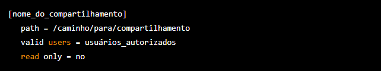

O que é samba?
O Samba é um software que tem como principal finalidade o compartilhamento de arquivos de servidores Linux para consumo em computadores Windows. Desta forma, é possível utilizar o Linux como servidor de arquivos, servidor de impressão, entre outros e acessar estas informações através de computadores com Windows.
Lançado em meados dos anos 90, mais precisamente em 1992, sob a licença GNU (General Public License), o Samba é um servidor de arquivos multiplataforma desenvolvido por Andrew Tridgell (famoso programador Australiano por suas contribuições na área de software livre).
Como instalar e utiliza o samba:
1º Instale o Samba4 com o comando: "sudo apt-get install samba"
2º Instale o Samba4 com o comando: "sudo apt-get install samba"
3º Adicione uma nova seção de compartilhamento, por exemplo:
4º Adicione um usuário Samba: "sudo smbpasswd -a usuario"
5º Reinicie o Samba: "sudo service smbd restart"
6º Teste a conexão ao compartilhamento: "smbclient //endereco_ip/nome_do_compartilhamento -U usuario"